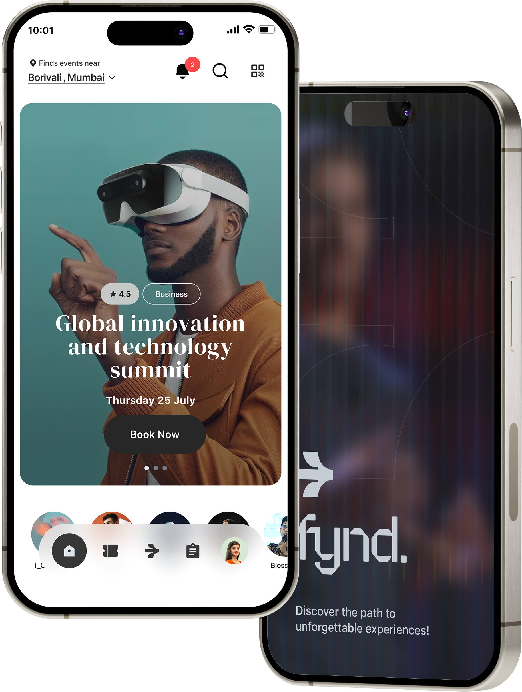
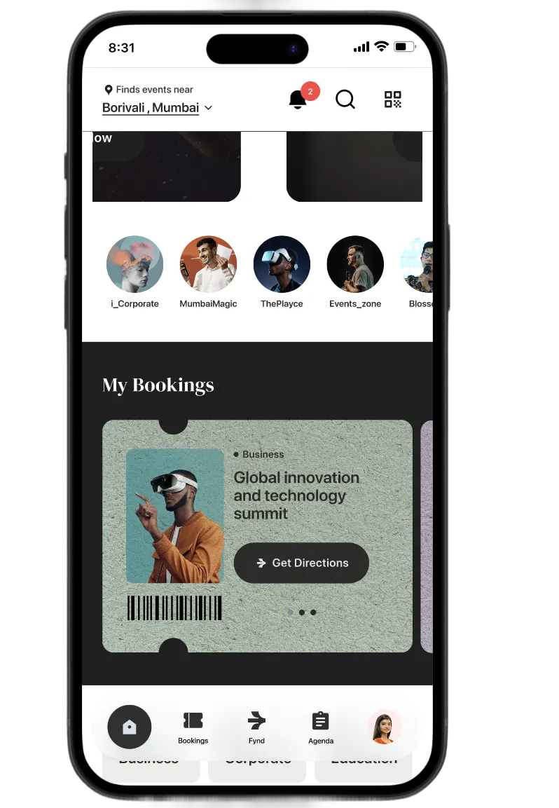
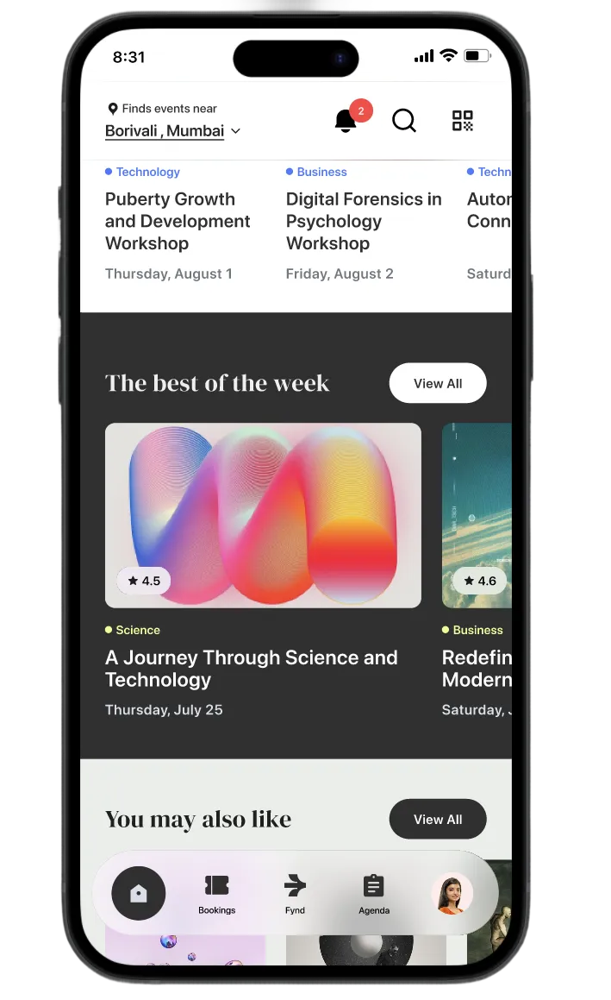
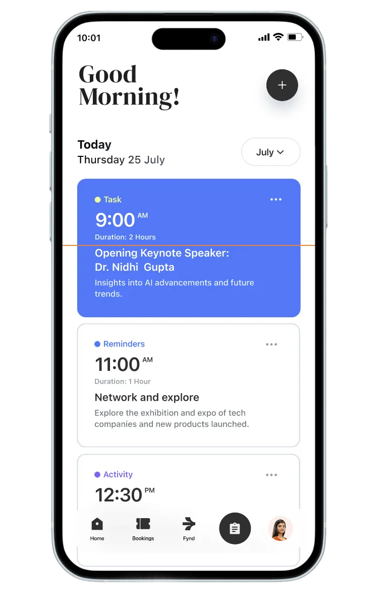
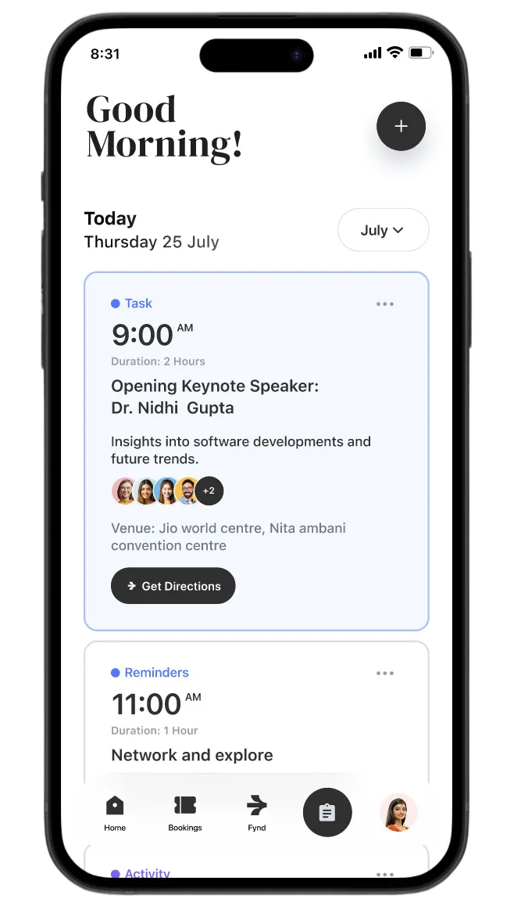
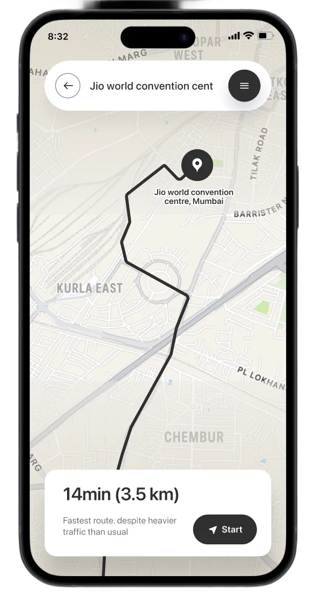
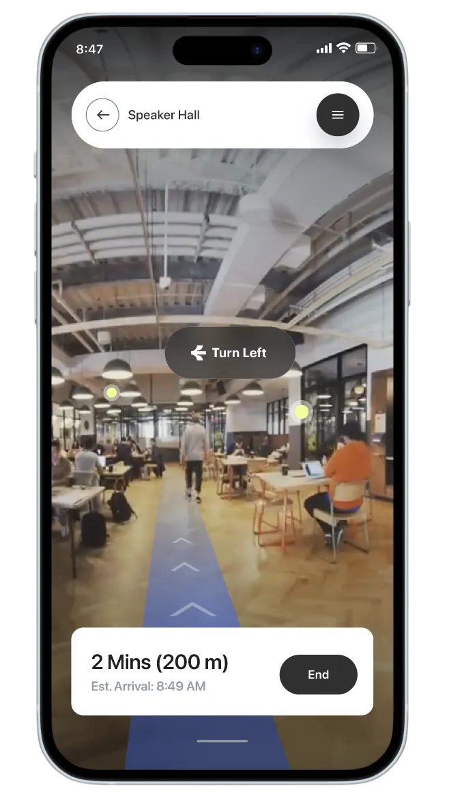
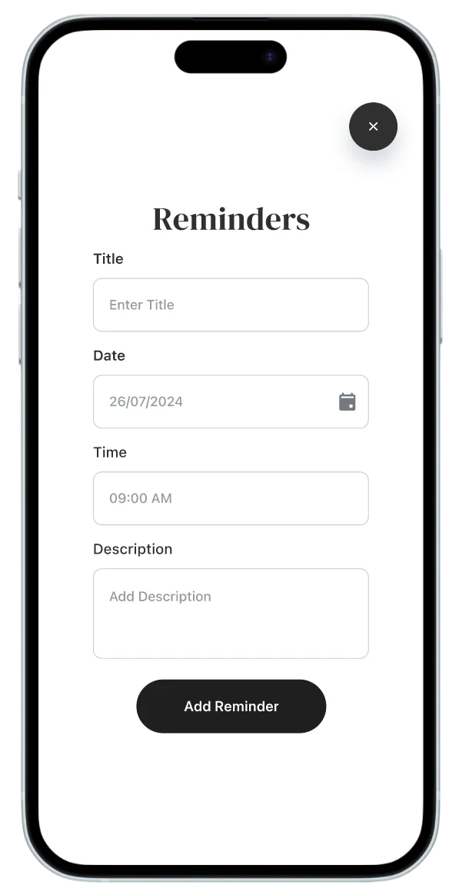
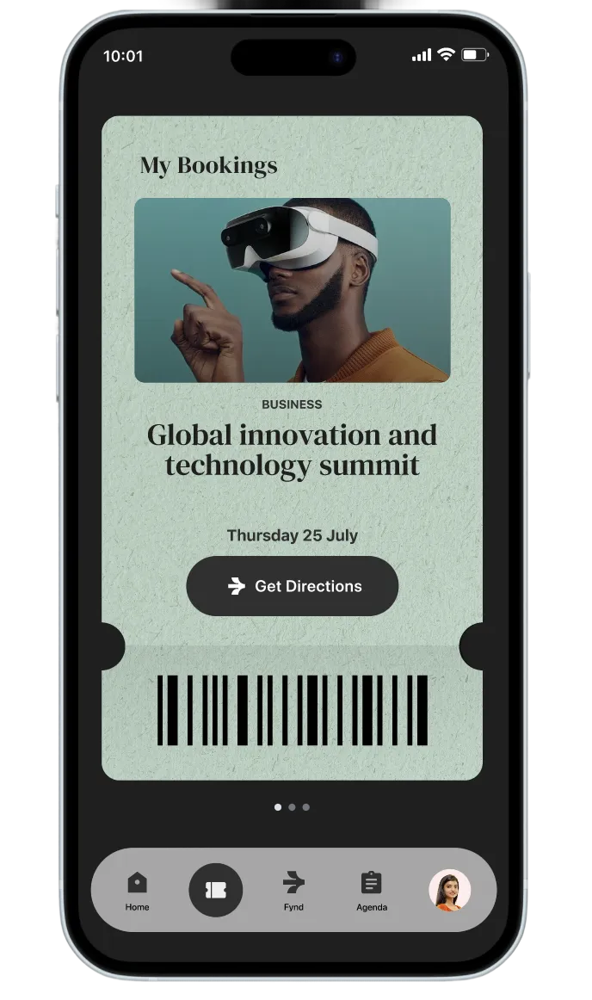
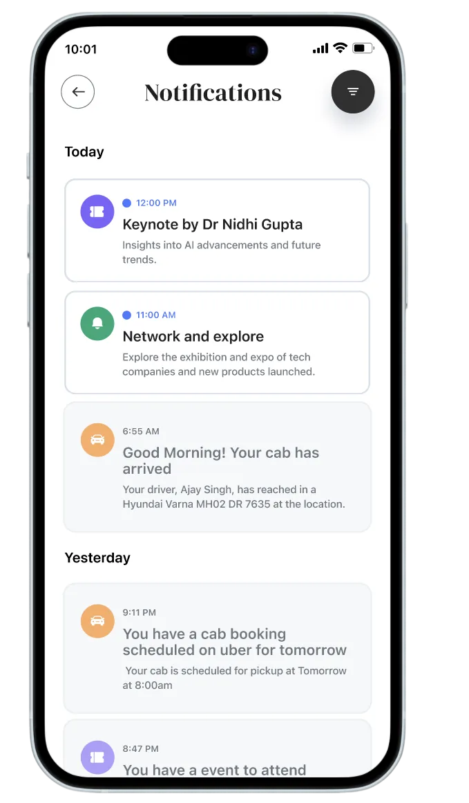

Discover the path to unforgettable experiences!
Tuesday
August 20, 2024
August 20, 2024
Discover the path to unforgettable experiences!
Fynd initially approached us to design a simple navigation feature that could help attendees move through large event venues with ease. What seemed like a straightforward wayfinding request quickly revealed a deeper need — the platform lacked a unified system that could connect maps, schedules, and real-time updates into one adaptive experience.

The goal
Success meant transforming navigation from a background utility into an interactive, engaging part of the event journey.
Clients Ask
Fynd initially approached us to design a simple navigation feature that could help attendees move through large event venues with ease. What seemed like a straightforward wayfinding request quickly revealed a deeper need — the platform lacked a unified system that could connect maps, schedules, and real-time updates into one adaptive experience.
Attendees often struggle to navigate large, complex venues, where unclear layouts and scattered signage make it easy to get lost. This confusion directly affects time management, causing people to miss sessions, meetings, and key opportunities simply because they cannot reach locations efficiently. The absence of real-time updates—such as last-minute room changes or schedule shifts—further compounds the problem, leaving attendees uninformed and unable to adjust their plans in time.
Core Problem
Navigating large event venues is frustrating due to complex layouts and changing schedules, causing attendees to waste time and miss sessions.
Events don't need more information 🎟️ they need a system that interprets it. 😊
The Navigation Problem
Despite improved event technology, attendees consistently face the same core challenges:
Scan the QR code to view the
Fynd mobile app prototype.



Designed a relevance-first home experience that personalizes event discovery, enables fast decision-making, and shortens the path from intent to conversion.


This experience prioritizes what matters now over static schedules by surfacing the right context, people, and actions at the right moment to reduce cognitive load and turn planning into effortless momentum.


This flow seamlessly bridges city-level routing with indoor wayfinding by adapting guidance in real time to the user's environment, minimizing friction and making movement through complex spaces feel intuitive and effortless.



These screens adapt to the user's real-world context in the moment, reducing decision fatigue and guiding action seamlessly when attention, time, and orientation are most constrained.